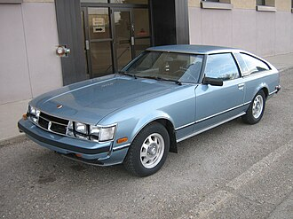
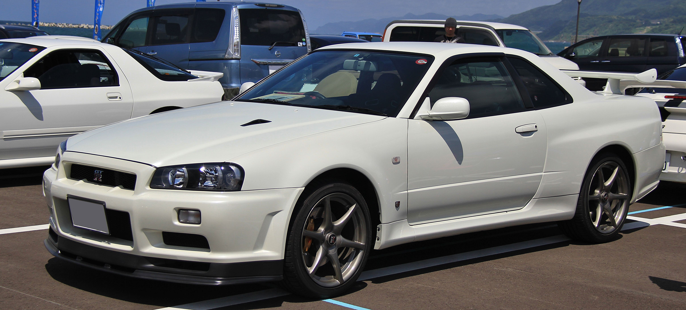
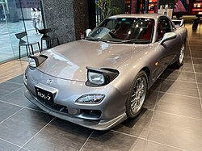
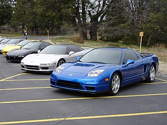

Engineering as Art
These cars were engineered to do more than go fast. They packed twin-turbo systems, rotary powerplants, advanced all-wheel-drive controllers, and exotic mid-engine layouts into road-legal packages.
Curated automotive exhibition
A Swiss Bauhaus-inspired gallery for the era when Toyota, Nissan, Mazda, and Honda built performance cars that rewrote the meaning of a street car.
This exhibition presents the Toyota Supra, Nissan Skyline GT-R, Mazda RX-7, and Honda NSX as museum artifacts. It explains why they became global icons, how factory innovation and street culture intersected, and why the story still matters today.
Explore the artifact archiveThese cars were engineered to do more than go fast. They packed twin-turbo systems, rotary powerplants, advanced all-wheel-drive controllers, and exotic mid-engine layouts into road-legal packages.
The JDM era created communities around tuning, craftsmanship, and street racing. Each model is a chapter in a shared automotive culture that still inspires fans worldwide.
Movies, video games, and magazines turned these cars into cultural symbols. The Supra, Skyline, RX-7, and NSX became icons beyond Japan, shaping global automotive imagination.
The same traits that made these cars rare in the 90s — advanced tech, performance, and distinctive design — are why collectors and enthusiasts still obsess over them.

Photo: Wikimedia Commons
Legendary twin-turbo straight-six power, widebody presence, and a cult following through street racing and film. The Supra symbolizes performance dreams made real.

Photo: Wikimedia Commons
Advanced AWD systems and a high-revving RB26 engine made the R34 a technical masterclass. It stands for precision, speed, and technological ambition.

Photo: Wikimedia Commons
Lightweight balance, a rotary heart, and a sculpted silhouette made the RX-7 feel like a machine built for the driver. It is the embodiment of engineering elegance.

Photo: Wikimedia Commons
The NSX brought race-car technology to the street with a mid-engine V6 and aluminum body. It reframed sports cars as precise, usable, and modern.
Want deeper context? Visit the artifact archive for curator notes on each iconic car.
Introduces Honda's race-derived engineering philosophy with a lightweight aluminum body and mid-engine layout.
Refines rotary performance into a balanced sports car celebrated for its agility and compact design.
Becomes a global icon for twin-turbo power and tuning potential, amplified by media and film appearances.
Showcases Nissan's advanced AWD technology and cements the Skyline's status as a legendary performance car.
Defined the concept, design style, persuasion method, and brand archetype before writing code.
Reviewed the site as a curator would: narrative flow, exhibit organization, artifact presentation, and visitor experience.
Built the homepage and artifact archive in a focused cycle with clear visual goals and curated content.
Applied Swiss Bauhaus styling, museum labels, and authority-based storytelling to create a cohesive visitor experience.
Added timeline context, a dedicated archive page, and expanded narrative to strengthen the exhibition quality.
{kind=link}
{kind=link}
{kind=link}
{kind=link}